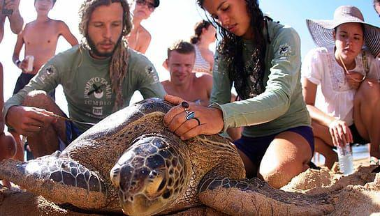
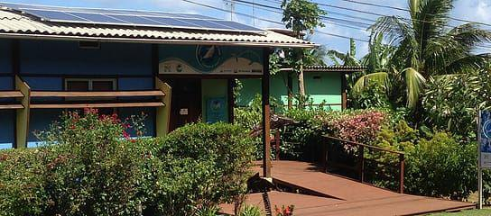

PROJETOS AMBIENTAIS E ORGÃOS DE CONSERVAÇÃO AMBIENTAL
PROJETO TAMAR – TARTARUGAS MARINHAS
O Projeto Tamar iniciou suas atividades de pesquisa e conservação em Noronha em 1984. O Centro de Visitantes foi aberto em 1996. Com o crescimento do turismo em Noronha, a ilha tornou-se um dos maiores destinos nacionais para o ecoturismo, e o Tamar decidiu abrir o CV para atrair e integrar esse fluxo crescente de pessoas para os programas ambientais locais, especialmente aqueles focados em vida marinha.
O Museu da Tartaruga tem painéis explicativos, réplicas das 05 espécies de tartarugas que ocorrem em Noronha, esqueletos de tartarugas, vídeos e outras informações sobre a vida da tartaruga e as principais ações desenvolvidas pelo Tamar para a sua conservação.
Eles também têm palestras, vídeos e outros eventos no Centro de Visitantes, sobre as tartarugas, a vida marinha e o ambiente de Noronha. O Projeto também dá aos visitantes a oportunidade de acompanhar as aberturas de ninhos, libertação de tartarugas marinhas filhotes no mar e a captura intencional de tartarugas para a marcação e pesquisa. A programação para essas atividades podem ser encontrados no Centro de Visitantes e é aberto ao público.
PROJETO TAMAR: Alameda Do Boldró, Fernando de Noronha / PE – Fone: (81) 3619-1174 | Aberto diariamente das 09:00 às 22:00hs
PROJETO GOLFINHO ROTADOR – GOLFINHOS
A partir de 1990, o Projeto Golfinho Rotador foi criado a partir da necessidade de conservação dos golfinhos da Ilha. Os voluntários do projeto monitor pesquisam e reúnem informações sobre os grupos a que assistem, e desenvolvem ações para manter os grupos em segurança e minimizar os impactos da interação humana com estes animais, procurando uma coexistência harmonizada entre os animais e o turismo, de forma sustentável. Voluntários e pesquisadores do projeto Golfinho Rotador podem ser notados principalmente no Forte dos Remédios observando os golfinhos na baía do porto e no Mirante da Baía de golfinhos, observando o grupo quando entram na baía para comer, descansar ou acasalar.
ICMBio – Instituto de Chico Mendes de Conservação da Biodiversidade
O ICMBio é o órgão responsável pela conservação de toda a área do Arquipélago de Fernando de Noronha. Com um território protegido 30% por uma área de proteção ambiental e 70% de um Parque Nacional Marinho, o órgão é responsável por regular e administrar a exploração turística da ilha, e definir ações e planos para proteger o meio ambiente e fauna local. É uma autarquia criada pelo Ministério do Meio Ambiente e integra o Sistema Nacional do Meio Ambiente.